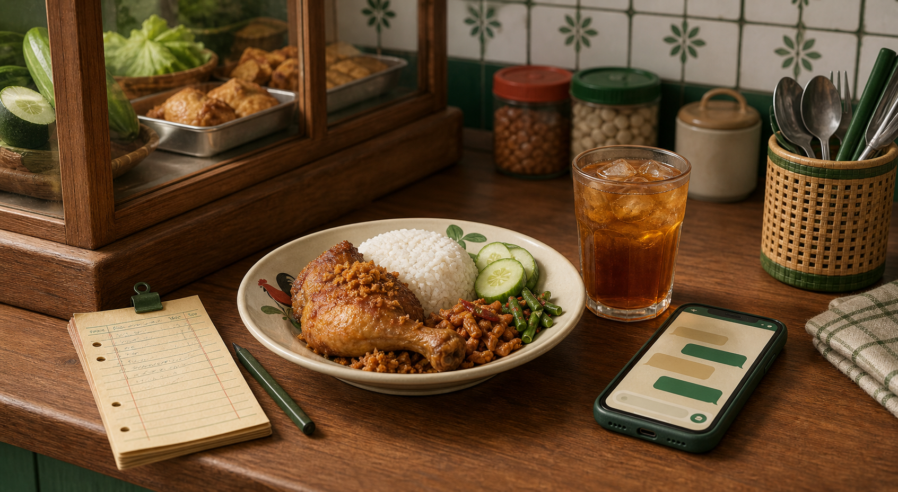

TemanUsaha AI
Build Week · 2026
TemanUsaha AI
Build Week · 2026
AI operasional untuk UMKM Indonesia
TemanUsaha AI
Mencatat pesanan semudah mengirim chat—dengan stok, total, dan jejak tindakan yang bisa diperiksa.

Dashboard realtime
Warung Nasi Bu Sari
Satu percakapan. Satu sumber data. Satu bukti tindakan.